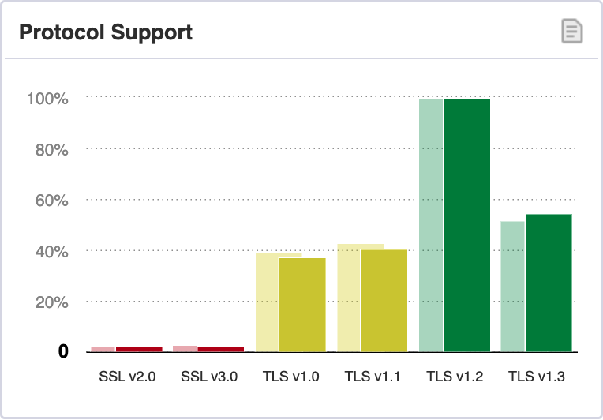
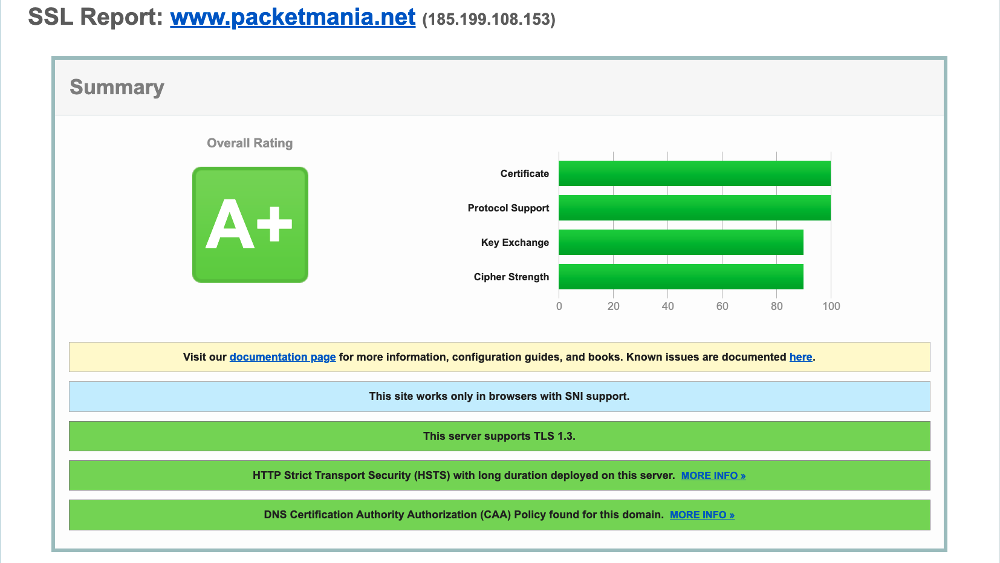
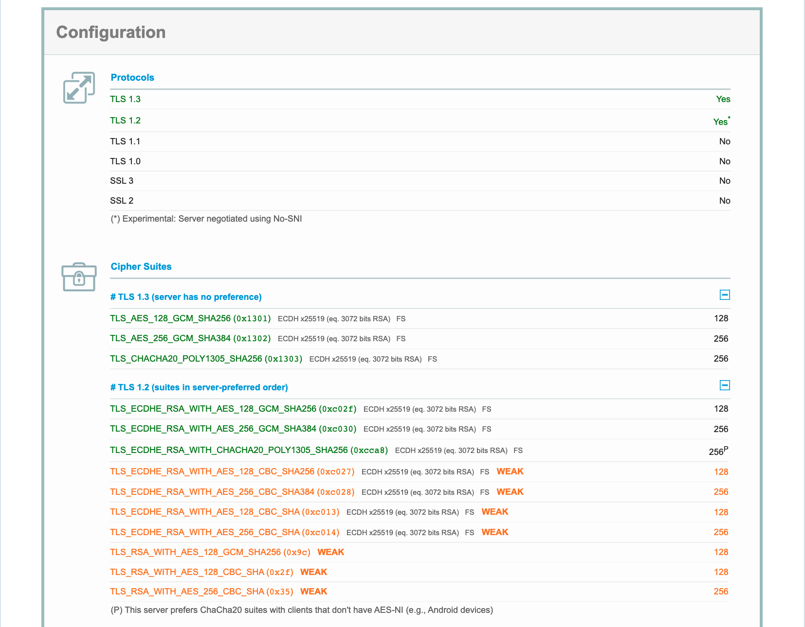
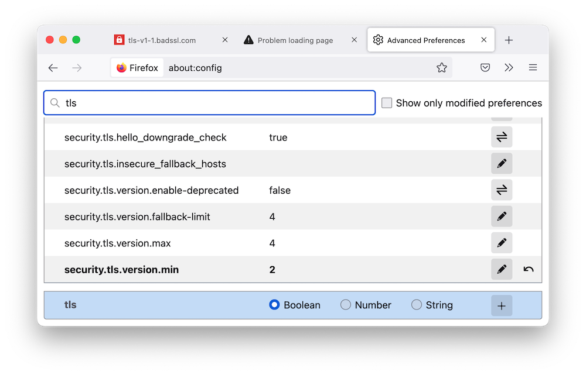
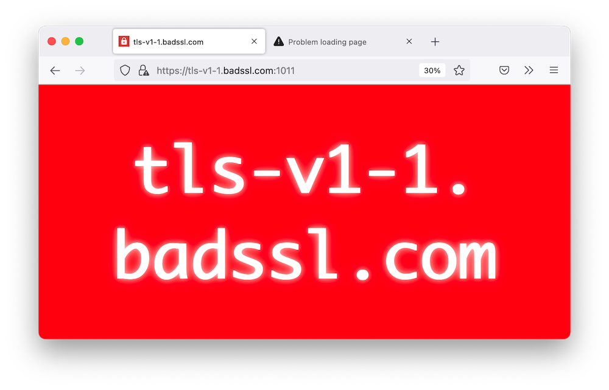

请马上停止使用TLS 1.0和TLS 1.1！
2021年3月，互联网工程任务组（IETF）发布分类为当前最佳实践的RFC 8996，正式宣布弃用TLS 1.0和 TLS 1.1协议。如果你的应用程序和网站服务还在使用这些协议，请马上停止并立即更新到TLS 1.2或TLS 1.3协议版本，以消除可能存在的安全隐患。
RFC解读
RFC 8996的文档标题非常直接，就是“弃用TLS 1.0和 TLS 1.1”。那么它给出的理据是什么？下面来做一个简单的解读。
首先，看看其摘要的中文译文：
本文档正式弃用传输层安全性协议（Transport Layer Security，简写TLS）1.0（RFC 2246）和1.1（RFC 4346）版本。 相应地，那些RFC文档已被移至历史状态。 这些协议版本缺乏对当前推荐的加密算法和机制的支持，而且现在许多政府和行业都要求使用TLS的各种应用避开这些旧的TLS版本。
TLS 1.2版本在2008年成为IETF协议的推荐版本（随后在2018年被TLS 1.3版本所替代），这为从旧版本过渡提供了足够的时间。从应用实现中移除对旧版本的支持可以减少攻击面、降低错误配置的机会和提高库和产品的维护效率。
本文档还废除了数据报传输层安全性协议（Datagram TLS）1.0版本（RFC 4347），但DTLS 1.2版本仍然有效。DTLS 1.1版本并不存在。
如文中所述，本文档更新了许多规范性地引用TLS 1.0或1.1版本的RFC。本文档也更新了RFC 7525中关于TLS使用的最佳实践。因此，它是BCP 195的一部分。
这里给出的信息很明确，弃用它们的原因完全是技术上的。TLS 1.0和TLS 1.1不能支持更强的加密算法和机制，无法胜任新时代各类网络应用的高安全需求。TLS是基于TCP的，对应于基于UDP的DTLS协议，RFC 8996也宣布弃用DTLS 1.0协议。
正文的序言部分列出了技术原因的一些细节：
- 这些旧版本要求实现一些过时的密码套件，而这些密码套件已经被密码学认定不再可取。比如TLS 1.0强制必须支持TLS_DHE_DSS_WITH_3DES_EDE_CBC_SHA。
- 缺乏对当前推荐的密码套件的支持，特别是带有关联数据的认证加密（AEAD）算法。TLS对它们的支持从1.2版本才开始。
- 握手过程的完整性取决于SHA-1散列值。
- 对对方真实性的认证取决于SHA-1签名。
- 支持四个版本的TLS协议使得错误配置的机会上升。
- 至少一个普遍使用的编程库正计划在即将发布的新版本中放弃对TLS 1.0和TLS 1.1的支持。
上述的第5、6条很清楚，无需进一步解释。
对第1条提到的3DES，虽然它使用总长168位的三个独立密钥，但是考虑到可能的中途相遇攻击，它的有效安全性仅为112位。此外，3DES的加密块长度仍然是64位，这使得它在生日攻击面前显得异常脆弱（参见Sweet32）。NIST规定单个3DES密钥组只能用于加密\(2^{20}\)个数据块（即8MB）。这当然太小了，最终NIST于2017决定在IPSec和TLS的协议中弃用3DES。
3DES只是一个例子，另一大类早先就被淘汰的就是使用RC4流密码的密码套件，详情可见RFC 7465。此外，还有块密码CBC模式实现中的种种问题，也常常被攻击者利用破解TLS会话。对TLS 1.0和TLS 1.1的各类攻击及应对措施的总结，在NIST800-52r2和RFC7457中有详细的阐述。这两个参考文档为弃用提供了关键理据。显然，任何强制要求实现不安全密码套件的协议都应该被列入被淘汰的清单中。
在文档的第2部分，更是直接引用了NIST800-52r2的1.1节“TLS的历史”中的内容（简略如下表所示）：
| TLS版本 | 协议文档 | 关键特征更新 |
|---|---|---|
| 1.1 | RFC 4346 | 改进初始化向量选择和填充差错处理的过程，以修补TLS 1.0中发现的CBC模式下的种种缺陷。 |
| 1.2 | RFC 5246 | 改进的加密算法，特别在散列函数方面支持SHA-2系列算法来进行散列、MAC和伪随机函数计算，增加了AEAD密码套件 |
| 1.3 | RFC 8446 | TLS的重大改变，旨在清除多年来出现的众多威胁。变化包括新的握手协议、新的使用基于HMAC的提取和扩展密钥派生函数（HKDF）的密钥派生过程，以及删除各种使用RSA密钥传输、静态迪菲—赫尔曼密钥交换、CBC操作模式或SHA-1的密码套件。 |
AEAD是一种能够同时保证数据的保密性、完整性和真实性的加密模式，典型的如CCM和GCM等。TLS 1.2引入了一系列AEAD密码套件，而它的高安全性使得其成为TLS 1.3的排他性选择。这些注释了技术原因的第2条。
技术原因的第3、4条点名SHA-1，那么SHA-1到底有什么问题？文档的第3部分引用了两名法国的研究者Karthikeyan Bhargavan和Gaetan Leurent的论文做出了解答。
作为一种密码散列函数，SHA-1由美国国家安全局（NSA）设计，而后被美国国家标准技术研究所（NIST）发布为联邦信息处理标准（FIPS）。SHA-1可将最大不超过\(2^{64}\)比特的消息生成一个160位（20字节）散列值，即消息摘要。由此，基于生日攻击的暴力破解需要复杂度为\(2^{80}\)的操作。2005年，中国密码学家王小云及其研究团队在此领域获得突破。她们发表的高效率SHA-1攻击法，能在\(2^{63}\)个计算复杂度内找到散列碰撞。这给SHA-1的安全性带来巨大的冲击，但这并不表示该破解法已经可以进入实用阶段。
网络安全协议（如TLS、IKE和SSH等）依赖于密码散列函数的次原像抗性（second preimage resistance），即从计算角度无法找到任何与特定输入值有着相同输出的二次输入值。例如，对于密码散列函数\(h(x)\)及给定输入\(x\)，很难找到满足\(h(x) = h(x^′)\)的次原像\(x^′ ≠ x\)。因为找到散列碰撞并不意味着就能定位出次原像，所以实践中人们一度认为继续使用SHA-1问题不大。
然而，2016年Bhargavan和Leurent（就是他们实现了前述的针对64位块密码的Sweet32攻击）发现了一类新的攻击密钥交换协议的方法，打破了这一认知。此方法建立于选择前缀碰撞攻击原理之上，即给定两个不同的前缀\(p_1\)和\(p_2\), 找到两个附件\(m_1\)和\(m_2\)满足\(h(p_1 ∥ m_1) = hash(p_2 ∥ m_2)\)。应用此方法，他们演示了针对TLS客户端和服务器的中间人攻击用以实现盗取敏感资料，也证实了攻击可以用来在TLS 1.1、IKEv2和SSH-2会话握手过程中实现伪装和降级。特别地，他们计算出只需要\(2^{77}\)次操作，就可以破解使用SHA-1或者MD5与SHA-1级联散列值的握手协议。
由于TLS 1.0和TLS 1.1都不允许会话双方为服务器密钥交换（ServerKeyExchange）消息或证书验证（CertificateVerify）消息选择更强的密码散列函数，IETF确认使用较新协议版本为唯一的升级路径。
文档的第4、5部分再次明确不得使用TLS 1.0和TLS 1.1、不允许从任何TLS版本协商到TLS 1.0或TLS 1.1。这意味着TLS客户端和服务器各自发出的ClientHello.client_version和ServerHello.server_version不得为{03,01}（TLS 1.0）或{03,02}（TLS 1.1）。如果收到对方发来的Hello消息里的协议版本号为{03,01}或{03,02}，本地必须以“protocol_version”告警消息回应并关闭连接。
值得注意的是，由于历史原因，TLS规范并没有明确客户端发送ClientHello消息时记录层版本号（TLSPlaintext.version）的取值。 所以为了最大限度地提高互操作性，TLS服务器必须接受任何值 {03,XX} (包括 {03,00}) 作为ClientHello消息的记录层版本号，但它们不得协商TLS 1.0或TLS 1.1。
文档的第6部分声明了对以前发布的RFC 7525（TLS和DTLS的安全使用推荐）的文字修订。在该RFC的三个地方将实现时协商TLS 1.0、TLS 1.1和DTLS 1.0从“不应”（SHOULD NOT）改为“不得”（MUST NOT）。最后余下部分是标准的RFC操作和安全考虑总结。
业界动态
在大型公共在线服务的业界，GitHub是最先行动的。他们早在2018年2月就开始在所有HTTPS连接中禁用TLS 1.0和TLS 1.1，同时还在SSH连接服务中淘汰了不安全的diffie-hellman-group1-sha1和diffie-hellman-group14-sha1密钥交换算法。2018年8月，Mozilla火狐的首席技术官Eric Rescorla发布TLS 1.3技术规范RFC 8446。两个月之后，Mozilla就与苹果、谷歌和微软三大巨头一起协同发布声明，将废除TLS 1.0和TLS 1.1提上日程。
以下是对几个相关知名企业的动态简单汇总：
- 微软：对于Office 365服务，受COVID-19的影响，曾经暂停了对商业客户的TLS 1.0和1.1的禁用。2020年10月15日重新启动了TLS 1.2的强制推广。SharePoint和OneDrive的用户需要更新和配置.NET以支持TLS 1.2。Teams Rooms的用户推荐升级应用程序到4.0.64.0版。Surface Hub在2019年5月就发布了对TLS 1.2的支持。Edge浏览器84版本开始默认不使用TLS 1.0/1.1 ，而Azure云计算服务则于2022年3月31日起永久废弃TLS 1.0/1.1。
- 谷歌：早于2018年，就开始在Chrome 70加入了TLS 1.3的功能。从Chrome 84开始，全面移除对TLS 1.0和TLS 1.1支持。在搜索引擎、Gmail电邮、YouTube和其他各种谷歌服务中运行TLS 1.3一段时间后，于2020年正式推出了TLS 1.3作为所有新的和现有的云CDN和全球负载均衡客户的默认配置。
- 苹果: 2021年9月宣布，在iOS 15、iPadOS 15、macOS 12、watchOS 8及tvOS 15中废止对TLS 1.0和TLS 1.1的支持，后续版本将彻底移除。如果用户的应用程序在所有的连接中都激活App Transport Security（ATS）功能，则无须任何改变。同时通告用户确保网络服务器支持更新的TLS版本，并从应用中删除以下已废弃的
Security.framework符号：- tls_protocol_version_t.TLSv10
- tls_protocol_version_t.TLSv11
- tls_protocol_version_t.DTLSv10
- Mozilla：从火狐浏览器78版开始，默认配置的最低TLS版本为TLS 1.2。在2020年初，Mozilla曾短暂完全去除火狐的TLS 1.0和TLS 1.1，但是这造成了许多用户无法打开一些COVID-19疫情公共信息网站，所以不得不恢复相关的功能。在此之后，Mozilla在其技术支持页提供帮助信息，指导用户自行按需修改默认配置中的最低TLS版本号。
- 思科：Cisco Umbrella（从OpenDNS更名而来）服务在2020年3月31日中止对TLS 1.2之前所有版本的支持。此后，只有兼容TLS 1.2的客户端才能进行连接。在路由器和交换机的产品线，2020年前后基本都实现了网页管理只允许TLS 1.2或后续版本。
- 思科的无线接入点（AP）与无线局域网控制器（WLC）之间的CAPWAP连接建立与DTLS之上。从2015年到最近发布的全部802.11ac Wave 2和802.11ax AP都支持DTLS 1.2。AireOS WLC在8.3.11x.0版加入DTLS 1.2功能，而运行IOS-XE的新一代C9800 WLC则一开始就支持DTLS 1.2。注意，因为存在大量使用旧设备和软件版本的既有网络部署，为保护用户投资，目前AP和WLC还不能马上去除对DTLS 1.0的支持。但是，DTLS 1.2已经是AP和WLC默认的最优选择。
协议测试
不论是TLS/DTLS的客户端还是服务器，都需要测试验证其实现是否遵循RFC 8996的当前最佳实践。
SSL Labs 测试
Qualys公司源自非商业的SSL Labs项目。他们提供免费的简单客户端和服务器测试服务，还有一个监控面板报告最流行互联网网站的TLS/SSL安全性扫描统计。下面是最近的2022年5月的协议支持统计图表：

| 协议版本 | 安全性 | 站点支持（2022年1月） | 站点支持（2022月5月) | 变化 |
|---|---|---|---|---|
| SSL 2.0 | 不安全 | 486（0.4%） | 404（0.3%) | -0.1% |
| SSL 3.0 | 不安全 | 3,864（2.8%） | 3,434（2.5%) | -0.3% |
| TLS 1.0 | 弃用 | 53,520（39.3%） | 50,216（37.1) | -2.2% |
| TLS 1.1 | 弃用 | 58,646（43.0%） | 54,926（40.6%) | -2.4% |
| TLS 1.2 | 取决于密码套件和客户端 | 135,842（99.6） | 134,937（99.7) | +0.1% |
| TLS 1.3 | 安全 | 70,073（51.4%） | 73,355（54.2%) | +2.8% |
可以看到，几乎100%的站点都能运行TLS 1.2，支持TLS 1.3的百分比也超过了50%。这是非常鼓舞人心的数据。虽然极少数网站还在运行SSL 2.0/3.0，并且TLS 1.0/1.1都还有40%左右的支持率，总体上它们所占比例是在持续下降的，这一好趋势应该会持续下去。
本博客网站的服务由GitHub Page提供，输入网址到SSL Lab的服务器测试页，提交后得到的测试结果总结如下：

站点的整体安全评级达到最高的A+。在证书和协议支持方面是满分，而在密钥交换和密码强度上也都得到90分。这说明GitHub兑现了对用户的安全承诺，值得程序员们的信任。
报告的配置部分，给出了如下协议支持和密码套件的测试结果细节：

这进一步确认了GitHub Page只支持TLS 1.2/1.3，符合RFC 8996的要求。还可以看到，在“密码套件”（Cipher Suites）小标题下，TLS 1.3显示的两项GCM、一项ChaCha20-Poly1305都是AEAD算法，同类的三个密码套件也是服务器首选的TLS 1.2密码套件。这正是当前普遍采纳的安全密码算法配置。
用户自测
如果怀疑私有服务器还在使用过时的TLS/SSL协议，可以用命令行工具curl做个简单测试，示例如下：
1 | ❯ curl https://www.cisco.com -svo /dev/null --tls-max 1.1 |
这里输入命令行选项--tls-max 1.1设定最高的协议版本1.1，并连接到思科公司主页。输出结果显示连接失败，并收到“protocol version”告警信息。这说明服务器拒绝了TLS 1.1连接请求，其响应正好就是RFC 8996所要求的。
通用的开源密码学和安全通信工具箱OpenSSL提供的openssl命令行工具也可以做同样的测试。为了检测服务器是否支持TLS 1.2协议，可使用选项s_client仿真TLS/SSL客户端，同时输入-tls1_2指定只用TLS 1.2。命令行运行的记录如下：
1 | ❯ openssl s_client -connect www.cisco.com:443 -tls1_2 |
此记录很详细，格式的可读性也非常好。从输出中，可以了解到思科主页服务器的数字证书是由根证书认证机构IdenTrust提供数字签名认证的。客户端与服务器的会话是建立在TLS 1.2协议之上的，选中的密码套件是AEAD类型的ECDHE-RSA-AES128-GCM-SHA256，与GitHub Page提供的首选项完全一致。
浏览器测试
如果不放心你使用的浏览器的安全性，想测一测看是否还支持TLS 1.2之前的协议，可以在浏览器的地址拦输入下面的网址：
- https://tls-v1-0.badssl.com （只支持TLS 1.0）
- https://tls-v1-1.badssl.com （只支持TLS 1.1）
用默认配置的火狐浏览器连到第二个网址后，页面显示如下
Secure Connection Failed
An error occurred during a connection to tls-v1-1.badssl.com:1011. Peer using unsupported version of security protocol.
Error code: SSL_ERROR_UNSUPPORTED_VERSION
- The page you are trying to view cannot be shown because the authenticity of the received data could not be verified.
- Please contact the website owners to inform them of this problem.
This website might not support the TLS 1.2 protocol, which is the minimum version supported by Firefox.
此错误消息清楚地表明，在此配置下火狐浏览器运行的最低TLS协议版本为1.2，由于对方只运行TLS 1.1，所以双方无法建立连接。
那么当浏览器真的还保留TLS 1.0/1.1的功能时，连接的结果是怎样的？
出于测试的目的，可以先将火狐的默认TLS偏好值改成1.1，步骤如下（参考下图）：
- 打开一个新标签页中，在地址栏中输入about:config，然后按回车/返回键。
- 页面提示“Proceed with Caution”，点击Accept the Risk and Continue按钮。
- 在页面上方的搜索框中，键入TLS，显示过滤后的列表。
- 找到security.tls.version.min偏好选项，点击Edit图标修改最低TLS版本。TLS版本与偏好值的对应关系是
- TLS 1.0 => 1
- TLS 1.1 => 2
- TLS 1.2 => 3
- TLS 1.3 => 4

此时再连到https://tls-v1-1.badssl.com，结果是

这个醒目的大红页面告诉你，当前使用的浏览器没有禁用TLS 1.1，存在安全风险，能不用就尽量不用。
测试完毕，不要忘记恢复火狐浏览器的默认TLS最低版本设置（3）。
参考书籍
Disclosure: This blog site is reader-supported. When you buy through the affiliate links below, we may earn a tiny commission. Thank you.
除了NIST和RFC文档之外，如果需要深入学习TLS协议规范、系统实现及应用和部署，推荐仔细阅读下面的三本书：
- SSL and TLS: Theory and Practice, Second Edition《SSL和TLS：理论与实践》（第二版，2016）—— 本书对SSL、TLS和DTLS协议进行了全面讨论，提供了关于协议的理论和实践的完整细节，使读者对其设计原则和操作模式有了坚实的了解。书中还综合论述了这些协议与其他互联网安全协议相比的优势和劣势，并提供了正确实施协议所需的细节。
- Implementing SSL/TLS Using Cryptography and PKI 《使用密码学和PKI实现SSL/TLS》（2011）—— 本书是为程序员准备的、用C语言编程实现互联网安全的SSL和TLS协议的实践性指南。即使缺乏密码学的知识，在本书的指导下也可以很好地完成工作。书中涵盖了TLS 1.2，包括实现相关加密协议、安全散列、证书解析和证书生成等内容。
- Bulletproof TLS and PKI, Second Edition: Understanding and Deploying SSL/TLS and PKI to Secure Servers and Web 《防弹TLS和PKI：理解和部署SSL/TLS和PKI以确保服务器和网站安全》（第二版，2022）—— 这是最新的一本关于使用TLS加密和PKI来部署安全服务器和网络应用的完整指南，作者Ivan Ristić就是 SSL Labs 网站的创建者。本书教你如何保护系统免受窃听和仿冒攻击。书中还特别介绍了许多知名的协议或实现中的漏洞和弱点信息，并给出相应的防范方案和部署建议。